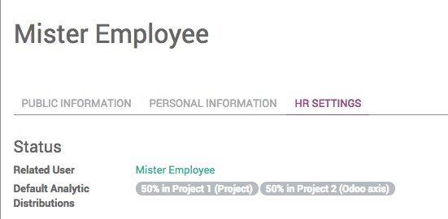

Default Analytic Distribution for Expenses
Automatically select the Analytic Distributions for your expenses!

This module allows you to set default analytic distributions for each employee.
These analytic distributions will be automatically set when the employee creates an expense.

Configuration
How to configure default analytic distributions

- Go on the employee you want to set default analytic distributions for
- On the HR Settings tabs, select the Default Analytic Distributions